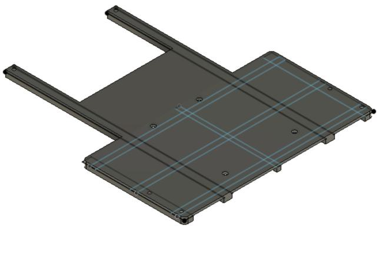

Робот, следующий по линии

Описание проекта
Существует направление соревнований в робототехнике, смысл которого — за минимальное время пройти трассу. Трасса представляет собой чёрную линию на белом фоне (или, наоборот, белую линию на чёрном фоне). Этот робот был построен преимущественно для участия в этих соревнованиях и оттачивания своих навыков. Основной алгоритм робота — ПИД-регулятор. На вход регулятору подаётся информация, получаемая с аналоговых датчиков линии, а выход с регулятора подаётся на драйвер двигателей. В процессе разработки этого робота я впервые столкнулся с ПИД-регулятором и изучил его. Также для него было смоделировано и напечатано на 3D-принтере простое шасси.